| 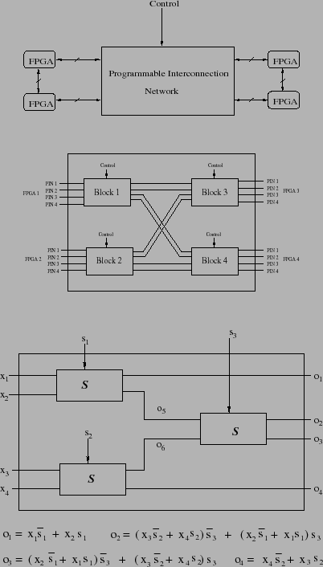 |
Many reconfigurable computers consist of multiple field-programmable processors (FPGAs) connected through a Programmable Interconnect Network (PIN) as shown in Figure 11. Interconnect synthesis is the process of configuring the PIN to match the communication requirements of the designs implemented on the processors. The general architecture of a PIN is depicted in Figure 12. A PIN routes signals between various input and output pins of the FPGAs: the specific routing is determined by the control signals on each of the routing blocks. One of many available routing blocks is shown in Figure 13, this one on the well-known Wildforce board.
Typically, but not necessarily, the control signals define a permutation of the inputs of the block and the permuted signals are routed to the corresponding output pins of the block. Each control signal can take a value from 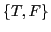 or be unassigned. An assignment of values to control signals is said to be a program of the interconnection network. Thus, a program defines a routing of the signals through the interconnection network. A required routing may be realizable through one or more programs or not realizable at all depending upon the routing capabilities of the interconnection blocks and how they are connected. A configuration of an interconnection network refers to a set of routes realized by a program. Whereas a program defines a configuration, it is not necessary that each configuration is realizable by a unique program.
The problem of interconnect synthesis can be formulated as a problem
of determining the satisfiability of a class of QBFs. For a PIN, let
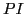 be the set of primary inputs (those connecting to FPGA
outputs), 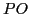 be the set of primary outputs (those connecting
to FPGA inputs), and 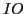 be the set of intermediate outputs
(those not directly accessible through pins). Let  be a desired
routing from to and
be a desired
routing from to and
 be a set of
contraints which evaluates to T if and only if values on
match values on a given according to
be a set of
contraints which evaluates to T if and only if values on
match values on a given according to  without any
inconsistencies among . The QBFs have the following form:
without any
inconsistencies among . The QBFs have the following form:
For this class, there is an efficient method for eliminating the Quantifiers resulting in a system of quantifier-free formulas that can be determined using ordinary satisfiability solvers. The key idea, called impulse response, is to establish constraints that force exactly one route from a single input to its destination at a time, and to repeat this process for all inputs.
Given an  dimensional Boolean vector
dimensional Boolean vector
 ,
define impulse(
,
define impulse( ) to be an assignment of F to variable
) to be an assignment of F to variable
 and T to all the other variables in 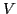. Clearly, there
are
and T to all the other variables in 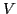. Clearly, there
are  impulses for an
impulses for an  dimensional vector. For each impulse, it
is straightforward to build constraints that force the target primary
output to take value F and all other primary outputs to take
value T while enforcing consistency among intermediate values
(an example follows). Call such a constraint, for impulse(
dimensional vector. For each impulse, it
is straightforward to build constraints that force the target primary
output to take value F and all other primary outputs to take
value T while enforcing consistency among intermediate values
(an example follows). Call such a constraint, for impulse( ),
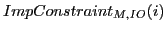. Then the QBF above can be replaced with
the following Boolean expression:
),
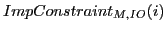. Then the QBF above can be replaced with
the following Boolean expression:
Consider, for example, just the routing block of Figure 13. The primary inputs are 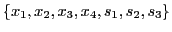, the primary outputs are 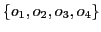, and the two intermediate outputs are 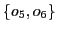. Suppose each subblock 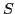 (there are three of them) either routes its two inputs directly to its two outputs (for example, 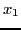 is routed to 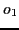 and 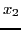 is routed to 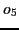 through the upper left subblock if 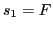) or crosses its routes (for example, is routed to and is routed to if 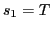). Then one can write the four equations shown in the Figure that relate primary outputs to primary inputs. Those equations are the basis for the consistency constraints needed.
The precise constraints depend on the routing desired. Suppose we
wish to determine whether there is a program (assignment to
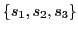) that realizes the configuration to , to
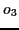, 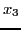 to 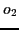, and  to 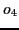. For impulse(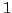) the
consistency constraints are
to 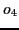. For impulse(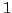) the
consistency constraints are